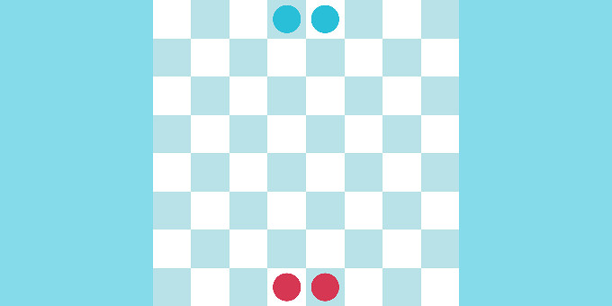
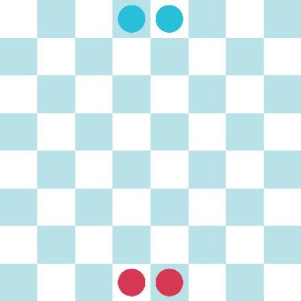
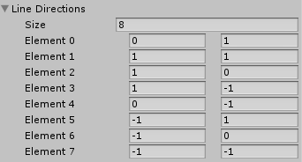
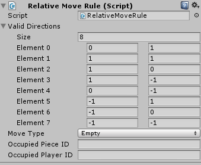
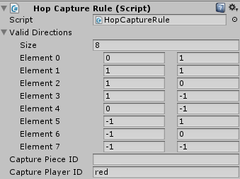
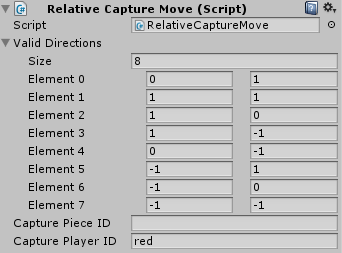
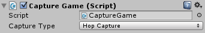
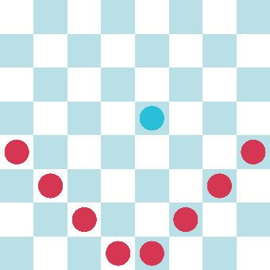

Capturing an Enemy Piece

To capture pieces, you need to configure your grid and board, and also set the moves and turns for your pieces. In this tutorial, we will make a game with the following configuration:

We will look at three different types of capture:
- A simple capture that involves moving onto another piece.
- A hop capture that involves hopping over a piece.
- A surround capture that involves surrounding an enemy piece on the left and right, or top and bottom, and results in the piece being replaced by a piece of the capturing player, rather than being taken.
- The same as above, but the piece is only transformed when it is fully surrounded by enemy pieces.
The other rules of this game are:
- Every player has two pieces.
- The red player starts.
- Pieces can move only one cell at a time.
- Pieces can move in any direction.
- Capturing works as explained above.
To implement the first four features, follow the Setting up a grid and board and the Moving a piece and changing turns tutorials.
To implement capturing, you need to do the following:
- Set the line directions on the
Grid Game Rulesscript on the GameBoard game object as shown below. These directions are relative and are necessary to tell the game which directions are valid for making or moving in lines.

- Your logical piece prefabs need to have a
Relative Move Rulecomponent with the Valid Directions configured with the same values as the line directions above, and the move type set to Empty.

- Logical piece prefabs need to have a Hop Capture Rule script with the same valid directions and a Capture Player ID of the enemy.

This script implements the rules to capture a piece when you hop over an enemy piece. It sets the valid directions from which you can capture, and sets the ID of the enemy piece.
- Add a Relative Capture Move Script to the logical piece prefab to allow simple captures, and configure it as follows:

The final step is to add the main game script.

The Capture Game Script does the following things:
- Starts the game by initializing the game and registering the players.
- Allows selecting different pieces.
- Allows moving a piece to a valid position.
- Allows capturing an enemy piece.
The first items are explained in other tutorials. The capturing happens in the OnClick method, implemented after a move is done but when the move is not valid.
if (manager.CommitMove(move))
{
TransformEnemyPieces(point);
DeselectPiece();
}
else
{
CapturePiece(selectedPos, point);
}
The CapturePiece method uses the Manhattan distance between the point of the actual piece and the target destination to check whether a capture is possible. For the hop capture, the legal distance is 2 or 4, and for the relative capture, it is 1.
The third type of capture is implemented fully in code. It checks whether the piece can be captured, and then transforms that piece into a piece of the capturing player.
Here is all the capture code:
/// <summary>
/// It tries to capture any piece that is between a movement that has a manhattan distance of 2 or 4.
/// In other words, any piece in rect or diagonal position when you hop above a piece.
/// </summary>
private void CapturePiece(GridPoint2 actualPiecePosition, GridPoint2 targetPosition)
{
var state = manager.State;
var moveDist = RectPoint.ManhattanNorm(actualPiecePosition - targetPosition);
if (ValidateCapture(moveDist))
return;
var centerPos = (targetPosition + actualPiecePosition) / 2;
var capturePiece = state.TestPosition(centerPos);
if (capturePiece == null)
return;
var move = state.CreateCapturePieceMove(selectedPiece, capturePiece, actualPiecePosition, targetPosition, centerPos);
if (manager.CommitMove(move))
{
DeselectPiece();
}
}
private bool ValidateCapture(int moveDistance)
{
switch (captureType)
{
case CaptureType.HopCapture:
if (moveDistance != 2 && moveDistance != 4)
return true;
break;
case CaptureType.RelativeCapture:
if (moveDistance != 1)
return true;
break;
case CaptureType.SurroundCapture:
return true;
case CaptureType.FullSurround:
return true;
}
return false;
}
private void TransformEnemyPieces(GridPoint2 point)
{
if (captureType != CaptureType.SurroundCapture && captureType != CaptureType.FullSurround)
return;
var rules = manager.Rules;
var currentPlayer = manager.CurrentPlayer;
IEnumerable<GridPoint2> positionsToReplace = new List<GridPoint2>();
switch (captureType)
{
case CaptureType.SurroundCapture:
positionsToReplace = GetPositionsToReplace(manager, point);
break;
case CaptureType.FullSurround:
positionsToReplace = GetSurroundPositions(manager, point);
break;
}
SurroundCapture(positionsToReplace, rules, currentPlayer);
}
private void SurroundCapture(IEnumerable<GridPoint2> positionsToReplace, IGameRules<GridPoint2, GridGamePieceSettings> rules, Player<GridPoint2, GridGamePieceSettings> currentPlayer)
{
//replace all the enemy cells between current player pieces
foreach (var rectPoint in positionsToReplace)
{
var newMove = manager.State.CreateReplacePieceMove(manager.GameGrid[rectPoint][0], rules.CreatePieceProperties(rules.GetPieceSettings("piece", currentPlayer.PlayerID), currentPlayer), rectPoint);
manager.CommitMove(newMove, false);
}
}
private IEnumerable<GridPoint2> GetPositionsToReplace(GridGameManager gameManager, GridPoint2 position)
{
var grid = gameManager.GameGrid;
var currentPlayer = gameManager.CurrentPlayer;
var positionsToReplace = new List<GridPoint2>();
foreach (var direction in RectPoint.OrthogonalAndDiagonalDirections)
{
AddPositionsToReplaceInDirection(position, grid, direction, currentPlayer, positionsToReplace);
}
return positionsToReplace;
}
private static void AddPositionsToReplaceInDirection(GridPoint2 position, Grid2<GridGameCell> grid, GridPoint2 direction, Player<GridPoint2, GridGamePieceSettings> currentPlayer,
List<GridPoint2> positionsToReplace)
{
var potentialPositionsToReplace = new List<GridPoint2>();
foreach (var point in grid.RayIterator(position, direction).Skip(1))
{
if (grid[point].Any())
{
if (grid[point][0].PlayerID != currentPlayer.PlayerID)
{
potentialPositionsToReplace.Add(point);
}
else
{
positionsToReplace.AddRange(potentialPositionsToReplace);
break;
}
}
else
{
break;
}
}
}
private IEnumerable<GridPoint2> GetSurroundPositions(GridGameManager gameManager, GridPoint2 position)
{
var grid = gameManager.GameGrid;
var currentPlayer = gameManager.CurrentPlayer;
var positionsToReplace = new List<GridPoint2>();
var currentPlayerPosition = gameManager.State.FindPiece(selectedPiece);
foreach (var point in RectPoint.GetOrthogonalAndDiagonalNeighbors(position))
{
if (!grid.Contains(point))
continue;
if (!grid[point].Any())
continue;
if (grid[point][0].PlayerID == currentPlayer.PlayerID)
continue;
var count = CountNeighboursEnemyPieces(gameManager, currentPlayerPosition, point);
if (count == 8)
{
positionsToReplace.Add(point);
}
}
return positionsToReplace;
}
private int CountNeighboursEnemyPieces(GridGameManager gameManager, GridPoint2 previousPlayerPosition, GridPoint2 position)
{
var grid = gameManager.GameGrid;
var currentPlayer = grid[position][0];
int enemyPieces = 0;
bool previousPlayerInRange = false;
foreach (var point in RectPoint.GetOrthogonalAndDiagonalNeighbors(position))
{
if (!grid.Contains(point))
continue;
if (!grid[point].Any())
continue;
if (grid[point][0].PlayerID == currentPlayer.PlayerID)
continue;
if (previousPlayerPosition == point)
{
previousPlayerInRange = true;
}
enemyPieces++;
}
if (!previousPlayerInRange)
enemyPieces++;
return enemyPieces;
}
